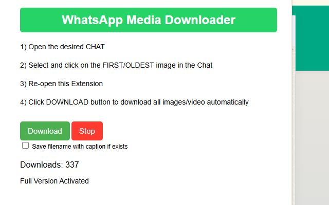
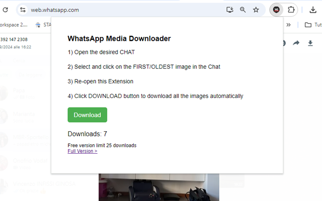

WA Media Downloader
Ever tried saving dozens of WhatsApp images or videos from a group chat manually Not fun. WA Media Downloader is a Chrome extension that automatically detects and lets you download all media files from open WhatsApp Web chats in one go.
Whether its for archiving memories, saving funny clips, or backing up work-related media, this extension saves you from repetitive clicks. It grabs every photo, video, or document visible in the current conversation and even lets you choose what type to fetch.
The interface is clean and minimal you select media types and hit download. Done. No technical setup, and no account required.
📄How to Use
- Open WhatsApp Web and log in.
- Go to any chat or group with media content.
- Click the WA Media Downloader extension icon.
- Select whether to download images, videos, documents, or all media.
- Click Start Download and the files will be saved automatically.
✅ Features
- Download all WhatsApp Web media in one click
- Supports images, videos, voice notes, and PDFs
- Select media type before downloading
- No third-party login required
- Lightweight and efficient UI
📷 Screenshots


Save your favorite media from WhatsApp before it disappears with zero hassle.
View on Chrome Web Store